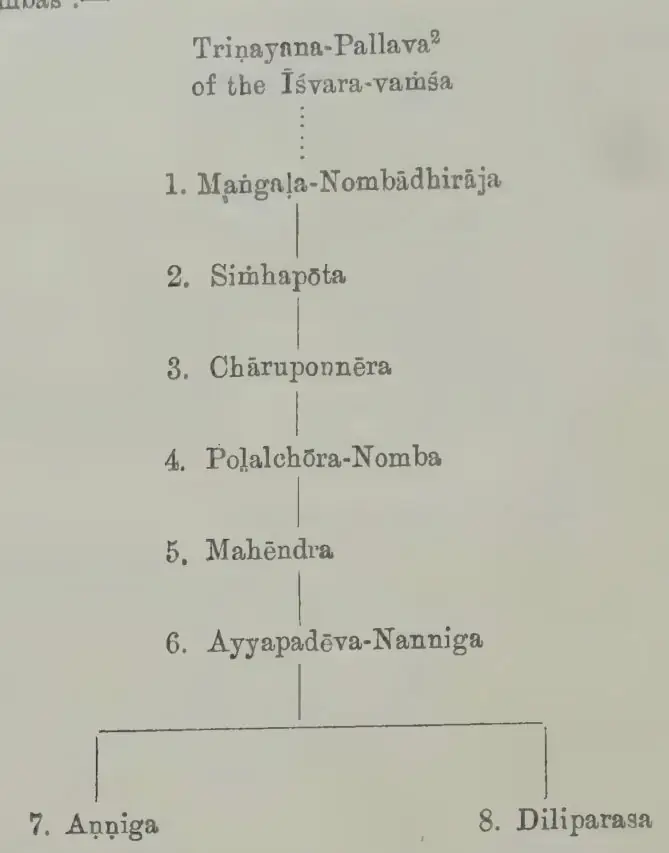

Two Nolamba inscriptions from Dharmapuri
TWO NOLAMBA INSCRIPTIONS FROM DHARMAPURI
OF THE 9TH CENTURY A.D.
BY H. KRISHNA SASTRI, B.A.
The two subjoined records1 are engraved on the four faces of a pillar which was removed in 1904 from Dharmapuri in the Salem District to the Madras Museum, where it is set up near one of the entrances into the Archæological Section. The pillar measures 5' 4½" by 1' 4" on the east face, 5' 6½" by 1' 4" on the west, and 5' 5½" by 1' 3" on the north and south faces. It is surmounted by a pinnacle from which proceed in the eight directions eight petals which open downwards and are slightly raised at the edges where they meet the margins of the pillar. Prior to its removal the pillar was built into the floor of a maṇḍapa in front of the Mallikārjuna temple at old Dharmapuri.2 The inscriptions on it were copied by Mr. G. Venkoba Rao early in 19013 and a brief note on their contents is found in the Annual Report on Epigraphy for 1900-01, p. 6, paragraph 11. The pillar has suffered from the vandalism of ignorant people who appear to have used the stone for some purpose or other, with the result that all the four faces are worn smooth about the middle and bear big round indentations 5 to 5½ inches
1 Nos. 304 and 305 of the Madras Epigraphical collection for 1901.
2 This is the name by which an almost deserted quarter, about 1½ miles from the modern town of Dharmapuri, is known. It contains the temples of Mallikārjuna, Māriyammaṇ and Vishṇu. The tank on whose bund the inscribed slab No. 309 of 1901 (noticed below, p. 64), was discovered, is also quite close to this quarter of Dharmapuri.
3 Better impressions from which the accompanying plate has been prepared were obtained by Mr. Venkoba Rao about the end of 1901. On this occasion he also copied another mutilated Nolamba record on a broken pillar which was lying in the Māriyammaṇ temple (No. 348 of 1901; see below, p. 63.)
in diameter, in which are lost one, two or more syllables in three consecutive lines on each of the four faces (ll. 11 to 13 on the west face; ll. 37 to 39 on the south face; ll. 66 to 68 on the east face and ll. 95 to 97 on the north face). The north-east rim of the pillar, at its lower end, is also damaged slightly and consequently, the end of ll. 79 to 83 on the east face and the beginning of ll. 106 to 110 on the north face have disappeared. The latter gap (in the imprecatory verses) has, however, been filled up with the help of similar passages occurring elsewhere. The break in the north-east rim has again, been the cause of one or more blanks in ll. 8 and 9 of inscription B. Except for these defects, the two inscriptions are in a state of excellent preservation and are written in old Kanarese characters of the period to which the inscriptions belong. They present a striking similarity to those of the Mantrawāđi, Sirūr and Niđagundi records edited by Dr. Fleet.1
As regards palæography, the initial vowels a, ā, i, u and e occur in their usual forms (e.g. in ll. 7, 64, 52, 58 and 82). Long ĩ when attached to consonants is distinguished from the short by a small loop made inside the circular i-mark at its base (compare, e.g. the i of palli2 with the ĩ of °sīme in l. 55). In Tagađūro (ll. 36 and 40), in Mūlapaļli (ll. 43 and 55), in Mūlasaṅgha (l. 47) and in Pūrvva- (l. 33), the symbol for long ā is marked in a slightly different way from the ordinary form of it as used e.g. in the ā of bhū in ll. 4, 97 and 107 (twice). This variant is like the subscript y with its bend to the left not quite pronounced. Short u affixed to the consonants k and r is marked by a hook (bending downwards) attached to the right side of the letter; whereas, in other cases it is a vertical u-like tube affixed from below to the consonant to which it belongs. When the u-mark is lengthened in the case of k and r a second hook (also turned downwards) is added—the first, however, being in this case, reversed for the sake of convenience. E is marked by a similar hook attached to the left side of the talekaṭtu, if one exists, or, somewhere on that side of the letter according to the whim of the writer. It may be noted that long ē is denoted in a few instances by the c-mark being made to end in a loop as in the case of the long ĩ (Jinēo, l. 3; -vareo, l. 15; and geyyuttirē (wrongly for geyyuttire), l. 26); whereas, in others, it is not distinguished from the short e (compare e.g. kuđe, l. 46 with Sēnāo, l. 47). The ai-symbol occurs only once in l. 72 in the word nairatiya (a mistake for nairritya). Here, the stroke slanting to the right over the talekaṭtu of the letter may be compared with the corresponding stroke (but slanting to the left) of the secondary ai in old Nāgari inscriptions. The compound vowel-mark ō, which consists of ā and e, is simple in its formation, and consists of two inverted hooks placed one at each end of the top-stroke—the one to the right representing ā and that to the left e. The anusvāra is marked by a small circle or, more frequently, by a dot and is always placed at the right top-corner of the letter to which it belongs. The upadhmāniya in ll. 106 and 107 is represented by the symbol for r (☞); while, the jihvāmūlīya, which may be expected at the end of l. 99, does not occur there.
With regard to consonants, it may be stated that all the five test letters discussed by Dr. Fleet in his study of ancient Kanarese records,2 are represented in the subjoined inscriptions—viz. kh, n, j, b and l. Kh in khaṇda- (l. 42) and in duhkhem- (l. 99 f.) is of the later cursive form. N̄ occurs as the first member of the conjunct consonant ṅgu, at the beginning of l. 61 and is of the closed type. J appears ten times and in only one instance (j of jñā in l. 1) is of the square type exactly similar to that which occurs in the Mantrawāđi inscription of Amōghavarsha I. In the other nine instances, it is of the same type but closed. The letter b is more frequently used and is always of the closed type, except in Sembalattūra (l. 56) where the subscript b is, however, formed as in modern Kanarese. L is also of frequent
1 Above, Vol. VII. pp. 198 ff.
2 See, for example, his remarks on palæography in the Nilgund inscription of Amōghavarsha I. (above, Vol. VI. p. 99), in the Hatti-Mattūr and Naregal records (ibid. pp. 161 and 162) and in the Mantrawāđi, Sirūr and Niđagundi inscriptions (ibid. Vol. VII. pp. 199, 203 and 209).
occurrence and is of the cursive type with the miniature in the centre representing the old square form of the letter. It is noteworthy that in its secondary form l is always of the square type (see ll at the beginning of ll. 5 and 23, in l. 7 and in ll. 21 and 63). The palatal ñ occurs in its subscript form in jñā (l. 1) and as the first component in the conjunct consonant ñcha (ll. 21 and 32). The rare consonants gh and chh are also found, the first in l. 47 and the second in its subscript form in ll. 99 and 101. Dental d is hardly, if at all, distinguished from the lingual. Ph, in the only case where it occurs (l. 98), is marked by a small cross stroke on its right side, which distinguishes it from the unaspirate. The rēpha, as the first component of a conjunct consonant, is denoted by a wavy line affixed to the top of the consonant; but, when the conjunct consonant ends in i, the rēpha is affixed at the root of the circular i-symbol, so as to make an angle with it.1 The final form of l occurs in l. 35.
As for orthography, it may be noted that ra is used for ri (in nairatiya, l. 72), that consonants are invariably doubled after a rēpha with which they occur in a conjunct form, that in some Kanarese words nasals are changed into anusvāra before consonants of their class (teñkaṇa, ll. 57, 58, 59, 60, etc.; karuṅgal, l. 61; talūndāle, l. 77; adūmbu, l. 78; kađegombu, l. 81) while, in some others they are not (Sembalattūra, l. 56; karuṅgal, l. 60 f.; banda, l. 62; =ante, l. 63); that vice versa the anusvāra is changed into the corresponding nasal twice in l. 54 before the words nakara and narasāsana (for narasāsana) and that in the latter as well as in sishyar (l. 50) the palatal ś and the sibilant s are wrongly used, one for the other. The language of the record is Sanskrīt (poetry, verses 1 to 5 and prose l. 4 f.) and Kanarese prose (ll. 5 to 94). The description of the boundary line contains some rare words whose interpretation has not yet been satisfactorily made out. My notes on the translation will show that some of these are very closely allied to Tamil.
Of the 110 lines which make up inscription A., the first 55 deal with the grant proper. Ll. 56 to 94 give a detailed description of the boundary of the village granted and the remaining ll. 95 to 110 contain the usual imprecatory verses. With an invocation to the doctrine (śāsana) of the Jinēndras (verse 1) and a short prefatory line in Sanskrit which mentions the family of the Pallavas, we are introduced to Pallavādhirāja, who is said to have conquered the whole earth, up to its four corners. His son was Nołambādhirāja, of whom it is stated that he was worshipped by all the sāmantas, by which, we have, perhaps, to understand that he brought them under his control and consolidated the work of his father. To this Nołambādhirāja and Jāabbe (l. 19 f.), daughter of Rāchamalla-Vermāđi2 and Mahādēviyar (ll. 16 and 17), was born Mahēndrādhirāja-Nołamba (l. 24), described as having acquired the five great sounds (samadhigata-pañchamahāśabda)—the distinguishing biruda of a feudatory ruler3—though later on he is styled ‘the favourite of (the goddesses) Fortune and the Earth (śrī-prīthvīvallabha)’4 like any other paramount sovereign. Mahēndrādhirāja belonged to the Pallava family and was an ornament of the Pallava race (Pallavakula-tilaka)5 (ll. 20 to 23). It is recorded of him that he destroyed the race of Mahābali (i. e. the Bānas) (l. 24 f.) and was occupying, at the time of the record A., the palace (śrīmāđa) at Tagađūru (ll. 36 and 37). In the Śaka year eight hundred and fifteen, when the cyclic year Paridhāvin was current, on
1 Compare Mr. Venkayya's remarks on the palæography of the Raṇastipūṇđi grant of Vimalāditya (above, Vol. VI. p. 348).
2 Rāchamalla bears the titles Satyavākya Koṅguṇivarma dharmamahārājādhirāja, ‘lord of Nandagiri’ and ‘ruler of Kovaļāla, the best of towns’ (ll. 12 to 16).
3 Above, Vol. V. p. 216, foot-note 3.
4 Ibid. p. 201.
5 This epithet was also borne by Dantivarma-Mahārāja of the Triplicane inscription (above, Vol. VIII. p. 292 and p. 293, note 4) and by the mahāmaṇdalēšvara Chiddapađeva-Mahārāja (Annual Report on Epigraphy for 1905-06, Part II. paragraph 5).
Thursday, the fifth tithi of the bright half of Āshāḍha, while the nakshatra was Pūrva-Phalguni and Jupiter rose in (i.e. entered) the sign Dhanus,—two private individuals Nidhiyaṇṇa and Chandiyaṇṇa—sons of a merchant from Śrīmaṅgala—built a Jaina temple (basadi) at Tagaḍūru (l. 40). The former of these received from the king, free from all encumbrances, the village of Mūlapalli (l. 43 f.) and in his turn made it over to Kanakasēnasiddhāntada-Bhatāra, pupil of Vinayasēnasiddhāntada-Bhatāra of the Pogariya-gaṇa, the Sēn-ānvaya and the Mūla-saṅgha (ll. 47 to 51), for repairs, additions, worship, etc. in that basadi (l. 42 f.). The witnesses to this transaction were the four samayins,1 the nādu, nakara, and the naraśāsana (ll. 52 to 55). Inscription B. which consists of 10 lines is written at the bottom of A. (all round the four faces of the pillar) in the same old Kanarese script as A. and in Kanarese prose. It records that a certain Lōkayya got from Ayyapadēva, son of Mahēndra-Nołamba, the village of Budugūru and made a gift of it to the Jaina temple built by Nidhiyaṇṇa—apparently identical with the one mentioned in A. The founder Nidhiyaṇṇa is also said to have presented a garden (?) for worship in the same temple.
From the foregoing it is evident that the subjoined records belong to the Nołambas who claimed descent from the Pallavas. The territory over which the Nołambas originally held sway has been suggested to be the small district of Nołambalge, mentioned in two Rāshyrakūta records2 of about the 9th century A.D., which, later on, appears to have received the appellation of Nołambavāđi thirty-two thousand. This province, which must have been originally confined to the districts of Tumkur and Chitaldroog in the Mysore State, and part at least of the Anantapur District in the Madras Presidency, was gradually extended as the Nołambas rose into power, and in the 10th century A.D. included the major portion of the Bellary, Bangalore and Kolar districts. Portions of Salem and North Arcot must also have been in the possession of the Nołambas at the time of the subjoined record.3
In his volumes on Chitaldroog and Tumkur (Vols. XI and XII of the Epigraphia Carnatica) Mr. Rice has collected a large number of Nołamba records which give us a fair outline of the history of that dynasty. Two pillar inscriptions from Hēmāvati in the Mađaksira tāluka of the Anantapur District and two from the town of Mađaksira itself, have been included by
1 Samayins are literally the members of a congregation or religion. Here, perhaps, the reference is to the four main divisions of the Jainas who, like the Hindus, recognise the four castes, viz. the Brāhmaṇas, Kshatriyas, Vaiśyas and Śūdras. The significance of the next three terms nādu, nakara and naraśāsana is not clear. The first means 'country' or 'country-folk'; the second, 'town' or 'town-folk' and the third perhaps signifies 'rulers of men' or 'officers of government.' What the author wants to say may be that the witnesses to the transaction were the whole Jaina community consisting of 'country-folk,' 'town-folk' and 'officers.' Mr. Venkayya suggests that the three terms in question, with the reflexive pronoun ivarē which follows them, may be meant to serve as a clause explaining what has been stated before. In other words, it may mean that the samayins who were witnesses to the present grant, are to be considered in themselves as good as the nādu, the nakara and the naraśāsana who, perhaps in ordinary cases, bore witness to public transactions.
2 Epigraphia Carnatica, Vol. XI. Cl. Nos. 33 and 34 and Introduction, p. 7.
3 Dr. Fleet's Kanarese Dynasties, p. 318. That Nołambavāđi included a part, if not the whole, of the Anantapur District is proved by the fact that Heñjegu, i.e. the modern Hēmāvati, the capital of the Nołambas, is situated in the Mađaksira tāluka of that district. As regards the influence which the Nołambas exercised about the end of the 9th century A.D. in the northern portion of the Salem District, we have the evidence of the subjoined records at Dharmapuri. About this period, North Arcot too must have been subject to Nołamba influence; for, the Āmbūr inscriptions of the time of Nrīpatuṅgavikramavarman refer to a cattle raid organised by the Nołamba against Āmaiyūr (above, Vol. IV. p. 180). The original territory of the Nołambas, however, was in the Tumkur and Chitaldroog districts of the Mysore State where their sway in the past is still testified to by the existence of a class of ryots known as Noñabas and of town-names like Noñavinkere (possibly a corruption of Noñambankere), Ayyamaṅgala (i. e. Ayyapamaṅgala, so called after Ayyapa, son of Mahēndra), Nołambapaṭṭaṇa, Nannivāla, etc. (Mr. Rice's Mysore Gazetteer, Vol. II. pp. 163 and 500).
Mr. Rice in his Tumkur volume.1 One of the Hēmāvati epigraphs furnishes the following genealogy of the Noļambas :—

This record, which belongs to the time of No. 8 Diliparasa, is dated in Šaka 864 and is thus later than the Dharmapuri inscription (A.) by 50 years, i.e. about two generations. Consequently No. 5 Mahēndra may be identical with Mahēndrādhirāja-Noļamba or Mahēndra-Noļamba of inscription (A.) and No. 6 Ayyapadēva-Nanniga, with Ayyapadēva “the asylum of truth (nanni)” of inscription (B.). This identification further enables us to identify No. 4 Poļalchōra-Nomba and No. 3 Chāruponnēra with Noļambādhirāja and Pallavādhirāja3 of the Dharmapuri record. We do not know of any dated records of these two last mentioned kings; but Mr. Rice refers to some from the Chitaldroog District4 which may prove that Pallavādhirāja-Chāruponnēra of the foregoing genealogy—son of Simhapōta—was a contemporary of the Rāshṭrakūṭa king
1 Ep. Carn. Vol. XII. Si. Nos. 24, 28, 35 and 36.
2 Triņayana-Pallava is synonymous with Trilōchana-Pallava, Mukkanṭi-Pallava or Mukkanṭi-Kāduveṭti (as the name sometimes appears in Telugu inscriptions). Trilōchana was the mythical Pallava king who was ruling the Telugu country prior to the advent of the Chalukyas under Vijayāditya of Ayōdhyā. In the mythical account of the Eastern Chalukyas given in copper-plates from the time of Vimalāditya downwards, Trilōchana-Pallava is mentioned as the king who opposed Vijayāditya in his victorious campaign against the south and perhaps also killed him (above, Vol. VI. p. 352, text, ll. 16 and 17). Trilōchana is also mentioned in Telugu inscriptions as the contemporary of the early Chōļa king Karikāla to whom he was subordinate. Mr. Venkayya places Karikāla (and consequently also Triņayana-Pallava) roughly about the end of the 5th century A.D. The Īśvara-vamśa to which Triņayapa-Pallava belonged (as disclosed by the Hēmāvati record) is not mentioned elsewhere. One record from Nandalūr (No. 580 of the Madras Epigraphical collection for 1907) actually traces Mukkanṭi-Kāduveṭti to the third eye of Šiva (Īśvara). The Pallavas of Kāñchi traced their descent from Brahmā, through many Purāṇic sages, to the Mahābhārata hero Aśvatthāman.
3 These two names appear more like general appellations and may have been borne by any one of the Noļamba kings who claimed descent from the Pallava family; whereas, those given in the genealogical record from Hēmāvati were, perhaps, the real names of the two Noļamba rulers who immediately preceded Mahēndrādhirāja.
4 Ep. Carn. Vol. XI. Cl Nos. 33 and 34.
Jagattuiga-Prabhūtavarsha-Gövinda III. whose dates range from A.D. 794 to 8131 and was, as a feudatory of that sovereign, ruling the Noļambalge one thousand and Nirgunda three hundred districts. Coming to Noļambādhirāja or Poļalchōra-Nomba of the Hēmāvati inscription, we gather from the subjoined record that he married Jāabbe, the daughter of the Western Gaņga king Rāchamalla-Vermmāđi. This identical relationship is mentioned in two other records of Mahēndra—one from Hēmāvati in the Anantapur District and the other from Baragūr in the Sira tāluka of the Tumkur District.2 These two inscriptions tell us that Jāabbe was the daughter of Rāchamalla and the younger sister of Nītimārga-Permāđi. According to Dr. Fleet, Rāchamalla, the father-in-law of Noļambādhirāja, is identical with Satyavākya-Rājamalla (A.D. 840 and 870-71).3 As the earliest record hitherto discovered of Mahēndrādhirāja-Noļamba is dated in Śaka 800, we may tentatively fix the lower limit of Noļambādhirāja's reign at A.D. 878-79. And as the father of Noļambādhirāja, viz. Pallavādhirāja, was a feudatory of the Rāshṭrakūṭa king Gövinda III. (A.D. 794 to 813), the upper limit would be 813 A.D. Thus, Noļambādhirāja—the second king mentioned in the subjoined record—may be presumed to have ruled between A.D. 813 and A.D. 878-79, though the period covered by this interval is an unusually long one.
1 We arrive at the same result if we go back two generations from the earliest available date of Mahēndrādhirāja, viz. A.D. 878-79 (Si. 38), and shall be near to the close of Gövinda's reign. Still another synchronism from a Chitaldroog record may help us to settle the probable period of Chāruponnōra. Chāruponnōra's father Simhapōta is therein mentioned (ibid. Cl. 8.) as the subordinate of a certain Permanađi, who, as the name suggests, was evidently a Western Gaņga king. According to Mr. Rice, Permanađi was a title which the early Western Gaņga king Śrīpurusha-Muttarasa “took away from the king of Kānchi” (Mysore Gazetteer, Vol. I. p. 314 and Ep. Carn. Vol. VIII. Nr. 35). Dr. Fleet assigns this Śrīpurusha to the period A.D. 765 to 805 (Ep. Ind. Vol. VI. p. 64). Consequently, the time of Chāruponnōra, son of Simhapōta, must have been subsequent to A.D. 805 as was already found to be the case.
2 Ep. Carn. Vol. XII. Si. Nos. 24 and 38. Both of these inscriptions have been translated by Mr. Rice on pp. 91 and 94 of his Tumkur volume. Here, he connects Jāyabbey-eŵbōł mahādēvi of both the records, with Noļambādhirājarātaņge which precedes a long parenthetical clause giving the parentage of Jāyabbe. By separating the expression Noļambādhirājarātaņge into Noļambādhirājarā and taņge, he arrives at the conclusion that the sister (taņge) of Noļambādhirāja was married to the Gaņga king Rāchamalla. Jāabbe (or Jāyabbe), we know, was the queen of Noļambādhirāja and mother of Mahēndra. If, accordingly, the phrase Jāyabbey-eŵbōł mahādēvi is to be correctly connected with the word Noļambādhirāja, the latter must, according to strict grammatical rules, end in the dative. But this would not be the case if we divide, as Mr. Rice does, the phrase Noļambādhirājarātaņge into Noļambādhirājarā and taņge. I think it is more natural to divide it into Noļambādhirājar and ātaņge. That this is actually intended is apparent from what we find in the subjoined record which states that Mahēndrādhirāja was born to Noļambādhirāja (Noļambādhirājarggam) and to Jāabbe (Jāabbegam). Mr. Rice's wrong interpretation of this phrase is evidently also responsible for the statement in the Mysore Gazetteer, Vol. I, p. 307, that “Pallavādhirāja's daughter was married to the Gaņga king Rājamalla.” An inscription at Chikka-Madhure in the Challakere tāluka (Ep. Carn. Vol. XI. Cl. 33), however, seems to prove that the Gaņgas and the Noļambas were related by intermarriage already in the reign of Simhapōta. It is here stated that Permānađi (i.e. the Western Gaņga king Śrīpurusha-Muttarasa) married the daughter's daughter of Simhapōta.
3 Above, Vol. VI. p. 66. Mr. Rice suggests that the Noļambādhirāja mentioned in an undated Gaņga record of Nītimārga at Kendaṭti-Mađivāla (Ep. Carn. Vol. X. Kl. 79) and the Noļamba king of the same name mentioned in the Pallava record at Bhōga-Nandi (ibid. Cl. 26), also undated, may both be identical with Noļambādhirāja-Poļalchōra (ibid. Introduction, pp. xviii and xix)—father of Mahēndrādhirāja and brother-in-law of Nītimārga. This suggestion does not appear to be correct; for, Nītimārga-Permānađigal under whom the former Noļambādhirāja is stated to have been ruling the district Gaņgarusāsira is, I believe, identical with Nītimārga-Permānađi Raṇavikrama whom Dr. Fleet places between A.D. 810 and 840 and not with Nītimārga, the unidentified son of Satyavākya Rāchamalla. Noļambādhirāja of the Nandi record does not appear to have been a feudatory chief but an independent Noļamba sovereign who ‘was ruling the earth’ (prithvī-rājyaṅ gey) without any overlord. Very probably he is identical with Immađi or Irmađi-Noļambādhirāja whose record of Saka 899 is found at Kandavāra not very far from Nandi (Bombay Gazetteer, Vol. I. Part II. p. 332 and Ep. Carn. Vol. X. Cl. 45). Nītimārga, the brother-in-law of Noļambādhirāja-Poļalchōra, did not, probably, succeed to the Gaņga throne; for, we know from the Huskūru inscription that Satyavākya Rājamalla's chosen successor (yuvarāja) was Būtarasa (above, Vol. VI. p. 66).
Of Mahēndrādhirāja-Noļamba the subjoined record states that he destroyed the family of the Mahābalis (i.e. the Bānas).1 The Baragūr and the Hēmāvati records report that Mahēndrādhirāja “uprooted Chōra and others of his kinsmen.” The Chōra here mentioned may refer to the Chōlas of the Telugu country,2 a branch of whom appears to have been ruling about Hēmāvati and Niđugal about that period.3 How these Chōlas of the Telugu country were ‘kinsmen’ of the Noļambas, is not quite clear. But in an inscription from the Maddagiri tāluka of the Tumkur District (Ep. Carn. Vol. XII. Mi. No. 102) Chaladańkakāra Chōliga, who is referred to about 900 A.D. by Mr. Rice, is stated to have been of Pallava descent. A later Chōla chief of Niđugal had the prefix ‘Vira-Noņamba’ added to his name.4 It may, perhaps, thus be possible to explain how the Chōras mentioned in the Baragūr and Hēmāvati inscriptions were ‘kinsmen’ of the Noļambas. The statement that Mahēndrādhirāja “destroyed the Bānas” is not a mere boast; for, the very existence of the subjoined records (A.) and (B.) almost on the borders of, if not actually within, the Bāna country, proves beyond doubt the occupation of that part of the country by the Noļambas. From an inscription at Būđidepalle5 in the Puņganūr Zamindāri which, on palæographical grounds may be referred to about the 9th century A.D., we learn that the Noļamba raided Puli-nāđu (in the Bāna territory) in the reign of Mahāvali-Bānarasa Bānavidyādhara. If this Bānavidyādhara be identical with the Bānavidyādhara Mahābali-Vānarāyar “who was governing (the country) to the west of the Telugu road” as a subordinate of the Ganga-Pallava king Nrīpatunga, his date would fall into the last quarter of the 9th century A.D.6 And, as Mahēndrādhirāja’s conquest of the Bānas is to be referred to about the same period, the raid on Puli-nāđu recorded in the Būđidepalle inscription may be supposed to have occurred in the early part of the reign of Mahēndrādhirāja and would, in that case, be but the commencement of his campaign against the Bānas, which eventually earned for him the title ‘destroyer of the Mahābali-race.’
Pallava sovereignty came to an end about the middle of the 8th century A.D. and in the subsequent struggle for power and supremacy among the various tribes that owed allegiance to the Pallavas, the Noļambas were often ranged against the Bānas. The incidents recorded in the Bangavādi vīragal,7 for instance, show that during the reign of the Ganga-Pallava king Vijaya-Narasinhavikramavarman, Skanda-Bānādhirāja met in battle Dađiya (Dađiga), Bānarāja and Mahēndravikrama. During the reign of the Vaidumba-Maharāja Ganđa-Triņētra, Bānarasa and Vaidumba-mahārāja marched on Soremaţi and were met on the battlefield by the Noļamba, Rāchamalla and Dađiga.8 An inscription at Pedda-Tippasamudram in the Cuddapah District states that the Vaidumba king Ganđa-Triņētra fought with Noļombi (i.e. the Noļamba king) on the battlefield jūst referred to.9 The vīragal at Chedaļla near Puņganūr10 belongs to the reign of Mahāvali-Bānarasa and states that the king on behalf of the
1 An undated inscriptiōn in the Bowringpet tāluka of the Kolar District (Ep. Carn. Vol. X. Bp. 64) states that Mahēndrādhirāja was ruling the district Gangarusāsira. This indicates his feudatory position, though the record does not expressly state it. At any rate, it must be referred to a period before A.D. 878 when, as will be shown in the sequel, Mahēndra must have extended his kingdom and become an independent sovereign. The feudatory position of Mahēndra thus suggested would reduce the long period of rule of Noļambādhirāja, arrived at on the previous page, by at least a few years.
2 Annual Report on Epigraphy for 1904-05, Part II. paragraph 5. The Mēlāgāņi inscription of Šaka 896 refers to a Pallava prince named Chōrayya-Noļamba (Ep. Carn. Vol. X. Mb. 84). Another record of Šaka 933 (ibid. Ct. 118) mentions a Noļambādhirāja-Chōrayya. It is, therefore, not impossible that the Chōra of the Hēmāvati and Baragūr records was the name of one of the contemporaneous kinsmen of Mahēndra.
3 Ep. Carn. Vol. XII. Introduction, p. 7.
4 Ibid. Vol. XI. Cl. 21.
5 No. 571 of the Madras Epigraphical collection for 1906.
6 Annual Report on Epigraphy for 1903-04, paragraph 26.
7 Above, Vol. VII. p. 22. Another vīragal noticed at the end of the same article mentions Mahāvali-Bānarasa on one side and Noļamba, Rāchamalla, Mayindađiya and Dađiga on the other.
8 No. 295 of the Madras Epigraphical collection for 1905.
9 No. 533 of the same collection for 1906.
10 No. 543 of the same collection.
Permanađi led an offensive campaign against the Nołamba, Rāchamalla and Mayindađi and met them in battle at Sorematđi. We have already referred to the raid into Puli-nāđu by the Nołamba during the reign of Bānavidyādhara. In the reign of the Bāna king Vijayādityan Vīrachūlāmanđi Prabhumēru,1 a certain Kāđuvaťti Muttarasan, perhaps connected with the Nołambas, attacked Kōyatūr, the modern Laddigam near Puńganūr2 in the Bāna territory. Thus, in these early conflicts we always see the Nołambas opposed to the Bānas and it is not unlikely that herein we have to seek for the cause which led to the destruction or complete conquest of the Bānas by the Nołamba king Mahēndrādhirāja-Nołamba which is claimed for him in the Dharmapuri inscription A. It will also be easy, now, to see how Nołamba records came to exist in such large numbers in the Bangalore and Kolar districts of the Mysore State which apparently belonged partly to Gańgavāđi 96,0003 and partly also to Perumbānappāđi4—the territory of the Bānas. Mahēndra before he entered into hostilities with the Gańgas and the Bānas appears to have been a subordinate of the former ruling the Gańgarūsāsira.5 What led to his hostilities with the Gańgas it is not possible to say at present.6 The fact that Rācheya-Gańga, as stated in the Iggali inscription, died in battle against the Nołamba (i.e. Mahēndrādhirāja) about A.D. 891—927 and that Eręyappa (A.D. 908 to 938) “governed the Gańgavāđi province as a united whole after depriving all his enemies of their power”8 shows clearly that Mahēndrādhirāja, at least during his lifetime, held under subjection a pretty large portion of the Gańgavāđi province. This perhaps accounts also for the existence of an intrusive record of his time at Tāyalūr in the Manđya tāluka of the Mysore District9 (the very heart of the Gańga country) which gives for Mahēndra the date Śaka 817—the latest known for him so far. It will be enough to state before closing this paragraph, that the Nołambas started a petty state in and around Hēmāvati in the Tumkur District about the beginning of the 8th century A.D. and continuing to hold it as the subordinates of the Rāshṭrakūṭas and the Gańgas, they fell into frequent conflicts with the Bānas, the Vaidumbas and the Chōłas and even with their overlords the Gańgas. About the end of the 9th century A.D. they found a favourable opportunity and rose to eminence under Mahēndrādhirāja-Nołamba.
A new name in the succession list of the Nołambas which, as will be shown below, has to be placed between Mahēndra and his son Ayyapa, has apparently been missed by Mr. Rice in his treatment of the chronology of that family. From an inscription at Āvani in the Muļbāgal tāluka of the Kōlār District,10 it appears as if Mahēndra had a brother called Irīva-Nołamba who was born of a different mother. The inscription states that Divabbarasi or Dīvalāmbā, born of the Kađamba family, was the chief queen (agra-mahishī) of Połalchōra, who, as stated
1 No. 542 of the Madras Epigraphical collection for 1906.
2 Annual Report on Epigraphy for 1906-07, Part II, paragraph 38. Bp. No. 13 of Mr. Rice's Epigraphia Carnatica Vol. X. refers to an earlier conquest of the same place and states that the conqueror Mādhava-Muttarasar belonged to the Gańga race.
3 Kōlāhalapura, the modern Kōlār, was built by the mythical Gańga king Kōlāhala in the great Gańgavāđi-vishaya. Bempūr (Bēgūr) twelve in the Bangalore District was granted to one of his subordinates by Eręyappa who was ruling over the Gańgavāđi 96,000. The large number of Gańga records on stone both in the Bangalore and Kōlār districts prove that these districts were included in the Gańga dominions. In the Bangalore District a good portion of the agricultural population of the Wokkaliga sect belong to a subdivision called Gańgađikāra. This name, according to Mr. Rice, is derived from Gańgavāđi—the country of which these people were the original inhabitants.
4 Muļbāgal, Chintāmanđi and Bowringpet tālukas of the Kōlār District bear traces of the supremacy of the Bāna kings over these parts; Mr. Rice's Mysore Gazetteer, Vol. II. p. 105.
5 Nołambādhirāja, father of Mahēndra, was ruling the same district as a feudatory of the Gańgas; see above, p. 59, footnote 3.
6 It is not unlikely that, in the matter of succession to the Gańga throne after the death of Rājamalla, there were disputes between his son Nitimārga (not identified) and the yuvarāja Satyavākya Būtuga I. the actual successor of Rājamalla. Perhaps Mahēndra helped his brother-in-law Nitimārga against Būtuga I.
7 Above Vol. VI. p. 68.
9 Ep. Carn. Vol. III. Md. 13.
8 Ibid. p. 49.
10 Ibid. Vol. X, Mb. 38.
above, is identical with Noļambādhirāja, father of Mahēndra. From the way in which Iķiva-Noļamba is introduced in the inscription, it looks as if he was born of Divalāmbā after Mahēndra's succession to the throne, or, if born earlier, his claims to succession had been overlooked in preference to those of Mahēndra, who had perhaps stronger support than Iķiva-Noļamba. Still it is not possible to assert that, after Mahēndra, the succession passed on direct to his son Ayyapa. The only sure date for Ayyapa hitherto known is Šaka 841.1 Between this and Šaka 817, the latest known date for Mahēndra, there is an interval of nearly one generation. Mr. Rice refers to two inscriptions of the time of Noļambādhirāja-Nolipayya, from the Maddagiri tāluka of the Tumkūr District,2 one of which supplies the date Šaka 820, Paiņgaļa. This Noļambādhirāja-Nolipayya is believed by Mr. Rice to be the same as Ayyapa. But we know that the latter's distinctive surname was Naņpiga and not Nolipayya. It is not impossible, therefore, that Iķiva-Noļamba, the son of Divalāmbā and step-brother of Mahēndra succeeded the latter under the name Noļambādhirāja-Nolipayya.3 If this conjecture is proved by future researches to be correct, it follows that Iķiva-Noļamba mentioned in the Āvani record was the son of Divalāmbā and not her grandson (Dilipayya Iķiva-Noļamba) as Mr. Rice puts it.4 Unfortunately the record is not dated. Otherwise, it would have given us the date of Mahēndra's death and that of the succession of Nolipayya ; for, it states that Divalāmbā on the death of Mahēndra built a temple and called it Noļamba-Nārāyanēšvara after Noļamba-Nārāyapa, one of Mahēndra's birudas. She also granted the village of Avināši (Āvani) and called it Poļalchōra-maņgaļa, perhaps after the name of her husband and in it constructed the tank Divalabbā-samudra after her own name.
Ayyapadēva, son of Mahēndra, must have succeeded Nolipayya. Of him we learn from inscription (B.) that he had the biruda "the asylum of truth (nanni)." It is this biruda evidently that accounts for his other name Naņpiga or Nanniga, which occurs in his inscriptions. He was the contemporary of the Gaņga king Eřeyappa and about A.D. 938 fought with the latter's help the battle of Tumbepāđi against Viramahēndra whom Dr. Fleet has identified with the Eastern Chalukya king Chāļukya-Bhīma II.5 The only date available for Ayyapa from inscriptions published hitherto has been Šaka 841, Ēšvara=A.D. 918-19. Although Ayyapa must, in the early part of his reign have been at war with the Gaņgas,6 while the latter were attempting to regain what they had ceded to Ayyapa's father Mahēndrādhirāja, he, later on, became their friend as appears from his war against the common foe,7 the Eastern Chalukya king Chāļukya-Bhīma II. If the statements made in the Kaluchumbařķu grant of Amma II.
1 Ibid. Vol. XII, Si. 39. The Šaka date 841 does not agree with the cyclic year Vikrama. It is two years too early. The same cyclic year without the Šaka date is given for Ayyapadēva in Ep. Carn. Vol. XI, JI. 29. But Cd. 62 of the same volume gives the correct cyclic year Ēšvara which corresponded to Šaka-Sarīvat 841 current.
2 Ibid. Mi. Nos. 27 and 52.
3 Noļambādhirāja-Nolipayya (-Nulipayya) receives the surname Iķiva-Noļamba Nolipayya (Nulipayya) in two records from the Kolar District ( Ep. Carn. Vol. X. Kl. 198 and Bp. 4). If this refers to Dilipayya, the grandson of Mahēndra, as Mr. Rice takes it, it appears to have been applied to him in accordance with the custom by which grandchildren are often named after their grandfathers ; we may thus have to presume that Dilipayya's surname was not that of his direct grandfather Mahēndra but that of the latter's brother Iķiva-Noļamba Nolipayya (I.).
4 Ibid. Introduction, p. xix. Evidently the mistake is due to his taking Dīvabbarasi and Dīvaļabbarasi to be two distinct individuals. But the record does not admit of any such interpretation.
5 Above, Vol. VI. p. 47.
6 See, for example, Ep. Carn. Vol. XII. Mi. 71.
7 The Noļambas seem to have been in conflict with the Eastern Chalukyas from still earlier times. Guņaga-Vijayāditýa III. (A.D. 844 to 888) is stated to have "cut off the head of Maņgi in battle." The Maliyapūndi grant of Amma II. (above, Vol. IX. p. 48 f.) says that this Maņgi was "the king of the great Noļambarāshtra (i.e. the Noļambavāđi country)." We do not know of any ruler of Noļambarāshtra about this period, that bore the name or surname Maņgi. The long interval between 814 and 878 A.D., noticed already, must have counted more than one Noļamba king besides Noļambādhirāja-Poļalchōra. Perhaps Maņgi was one of these. Nombādhirāja, the first historical ancestor of the Noļambas, was, according to the Hēmāvatī inscription, known to the Karnātas (i.e. the Kāshtrakūtas) as Maņgaļa. The Maņgi of the Maliyapūndi grant might have been named after this early Maņgaļa.
are to be taken as literally true,1 Ayyapa must have fallen in the fight with Chālukya-Bhima II. Dr. Fleet places this event about the end of Eṛeyappa's reign, i.e. between A.D. 934 and 938. Accordingly, we may perhaps infer that Ayyapa ruled from Śaka 841 (=A.D. 918-19) to Śaka 860 (=A.D. 938-39). But his records registered by Mr. Rice in the volumes of the Epigraphia Carnatica do not assign to him dates later than A.D. 920. After Ayyapa2 the family appears to have gradually declined till it was subjugated by the Chōla king Rājarāja I. of Tanjore in A.D. 998-99.3
The Nolamba occupation of Tagađūru which is established by the existence in it of the records of Mahēndra and his son Ayyapa is corroborated by another inscription4 on a broken pillar discovered in the Māriyammaṇ temple at old Dharmapuri. It registers the grant of a tank (?) called Marudanēri by Mahēndra-Nolamba in Śaka 800 (corresponding to the cyclic year Vilambi) to the teacher Fonnēra-goravar who, as the sufflix goravar indicates, must have been a Śaiva.5 It is also recorded in this inscription that the tank after repair was placed by the teacher in the hands of the samayins.6 On this occasion, the merchants (evidently those of Tagađūru), among whom figure Chandiyaṇṇa and N[i]dhiyaṇṇa, the builders of the Jaina basadī recorded in inscription A., [assigned] tolls on certain commodities as a dēvadāna. The inscription being broken, it is not possible to say to what particular temple the dēvadāna was intended. The record at any rate supplies us with two important facts, viz. (1) that already, in Śaka 800 (the earliest date for Mahēndra, known also from the Baragūrn record) Mahēndra had occupied Dharmapuri and the surrounding country, and (2) that the Śaiva and the Jaina faiths (samaya) were flourishing side by side at Tagađūru under the patronage of the Nolamba kings towards the close of the 9th century A.D. Still another fragmentary inscription on a pillar of black granite in the Mallikārjuna temple at old Dharmapuri7 begins with the phrase svusti Pallav-ānvayīya and introduces Nolambādhirāja and the Gaṅga king [Rachamalla] in the very same terms as inscription A. The record does not appear to have contained any Śaka date but the month, fortnight, tithī, week-day, etc. are given on one of the mutilated
1 Above, Vol. VII. p. 187, text line 38.
2 In the Dēōli plates of the Rāshṭrakūṭa king Kṛishṇa III., dated in Śaka 862, a Pallava king named Anniga is said to have been defeated by Kṛishṇa III. (Above, Vol. IV, p. 191). It is not unlikely that this Anniga was the son of Ayyapa.
3 The earliest Chōla inscription mentioned in the Epigraphia Carnatica (Vol. X. Introduction, p. xxiv) is one of Madiregoṇda Kō-Parakēsarivarman. Mr. Rice himself doubts if this could be attributed to the early Chōla king Parantaka I. The next sure record is one of Rājarāja I. from the Hoskōṭe tāluka (Ep. Carn. Vol. IX. Ht. 111). Rājarāja's conquest of Gaṅgapāđi, Nulambapāđi and Tađiyapāđi are mentioned for the first time in his records of the 14th year. Consequently, we have to suppose that Rājarāja overran these provinces in A.D. 998-99, but perhaps allowed the rulers to continue governing their kingdoms as Chōla feudatories. For, Ht. 111 states that in Śaka 920—the very year in which Rājarāja must have entered Mysore—Gannarasa, son of Ayyapa-dēva (apparently a Nolamba) was ruling a portion of Daļigavāđi as a feudatory of the Chōla king. In (Śaka 923) the 16th year of Rājarāja, a certain Nolambādhirāja made a grant in his capacity as the general of the Chōla emperor (Ep. Carn. Vol. X. Mb. 208). Nolambādhirāja Chōrayya, with Nolamba attributes, was ruling in Śaka 933 also as a tributary of the Chōla king Mummađi-Chōla (Rājarāja I.) (ibid. Ct. 118). In the 25th year of Rājarāja I. (i.e. A.D. 1009) Tagađūr-nāđu was ruled by a Chōla subordinate named Pañchavaṇ Brahmādhirāyṇ (Madras Epigraphical collection for 1909, No. 254) and was included in the Mulvāyi-rājya in the reign of the Vijayanagara king Dēvarāya I. (ibid. No. 251). It may be pointed out that Kl. 75, which Mr. Rice supposes to be one of Rājarāja I, dated in his 7th year (ibid. Introduction, p. xxiv), is a record of Rājarāja II.; for the introductory phrase pū maruviya poļil-ēļu occurs in some of the Tamil records of the latter.
4 No. 348 of the Madras Epigraphical collection for 1901.
5 See Dr. Kittel's Kannađa-English Dictionary, s. v. gorara; and above, Vol. VII, pp. 200 and 292. It may be noted that guravađiga is also used as an honorific title attached to the names of Jaina teachers.
6 See above, p. 57, footnote 1. Samayin, here evidently denotes the adherents of the Śaiva samaya. Dr. Winslow in his Tamil and English Dictionary mentions "twelve principal religious systems (samaya of which six are approved and six rejected by the Śaiva sects."
7 No. 306 of the Madras Epigraphical collection for 1901.
faces.1 The donee here was a certain Bhairavaśakti-Bhatāra of Nandi. Bhairavaśakti, as his name indicates, must have been a Śaiva preceptor like Ponnēra-goravar of the record just quoted, and Nandi is undoubtedly the village of that name at the foot of the historic hill Nandagiri in the Kōlār District.
Tagadūru, in which the Jaina temple was built by the merchants Nidhiyanṇa and Chandiyanṇa, has been identified with the modern Dharmapuri where the pillar was found.2 Neither the Jaina temple nor the palace (śrīmāđa) referred to in l. 36 could now be traced.3 Tagadūru was, at this time, perhaps, a very important city, and from what is said of it in an undated inscription 4 on a stone set up on the bund of the big tank at old Dharmapuri, it was, as it were, “a reflected image of the whole earth; for in it were:—this 5 Śaiva teacher Vidderāśi; the temples Kali-Chōrēśvara,6 Pallavēśvara, the great Bhōgēśvara, the magnificent and spotless Nannēśvara and Bhujangēśvara of Kāñchi which shone in its imperial (?) fame; the enclosing walls (prākāra) and the pleasure-gardens (nandana-vana) of kings who were as powerful as lions.”7 The village Mūlapalī which was granted to the Jaina temple and the two other villages which touched its boundary line have been kindly identified for me by Mr. C. Hayavadana Rao, B.A., B.L. He writes:—Mūlapalī is probably represented by the modern village of Mūlakāđu, 9 miles west of Dharmapuri. Sembalattūru may be Semmanahalī, now a railway station on the Morappur-Dharmapuri section of the South Indian Railway, and Budugūru is apparently Buduganhalī, about 7 miles south of Dharmapuri.” It may be noted that Budugūru which is mentioned in l. 86 of (A.), is the object of the grant in inscription (B.).
Kali=Chōrēśvara-[Pallavē]śvara-mahā-Bhōgēśvar-ōttuṅga-ni-
rmmala-Nannēśvara-kīrtti-śāsana-lasat-Kāñchi-Bhujangēśvara-
r-vvala-kanthirava-bhūpa-nandana-vana-prākāra-sarn[sthā]nadi-
n=zelak=ellam padichandam=āytu Tagadūr=i Vidderāśindrarim.
1 Bhādrapa[da-mā*]sada bahula-pakshada tadi[ge*]yuñ Brihaspati-vāramuñ Rēvatī-[naksha*]tramuñ Vriddhiy=embudu nitya-yō[gamu*]m=āge Kanne-saṅkrāntiya tat-kā[lado*]l=. The details of this date, which is probably one of Mahēndrādhirāja, were submitted to Professor Jacobi of Bonn for verification. He remarks:—“Kanyā-saṅkrānti fell on Thursday (1) 21st August 891 A.D. which day was Bhādrapada ba. di. 3. But the moon had left Rēvatī and stood in Aśvini and the yōga Vṛiddhi was just over and Dhruva was the current yōga; (2) 25th August 880, but this was Bhādrapada ba. di. 2 with nakshatra Rēvatī and yōga Vṛiddhi. These are the only possible years.”
2 Above, Vol. VI, p. 331. In two later inscriptions of about the 12th century A.D. found at Dharmapuri (Nos. 307 and 308 of the Madras Epigraphical collection for 1901) the place is called Tagadūr in Tagadūr-nāđu, a sub-division of the Gaṅga country (Gaṅga-nāđu). It is not known when and why the name of the town was changed to Dharmapuri. The Madras Manual of Administration, Vol. III. p. 271 states that it is derived from the name of a local chief called Dharmarajab, who is not known to any epigraphical records. It is doubtful also if we could connect the name Dharmapuri with Dharmmavoļal which is mentioned in the Baragūr record of the Noļamba kiug Mahēndra, as having been ruled by Parama-Mahādēvi, a lady of the royal household. In the records of this period found at Dharmapuri and in the Tamil poem Puranānūru, the place is known only as Tagadūru.
3 I have been informed by Mr. C. Hayavadana Rao, B.A., B.L., who inspected the place, that “a few hundred yards from the temple of Mallikārjuna in old Dharmapuri and just opposite the European cemetery, there is a small slab bearing Jaina figures.” This perhaps is the only relic of the Jaina basadi built by Nidhiyanṇa and Chandiyanṇa at Tagadūru (Dharmapuri).
4 No. 309 of the Madras Epigraphical collection for 1901. The old Kanarese characters in which this record is written are beautifully engraved and present a box-headed type which is unique. They may be referred to about the same period as the Noļamba records. Vidderāśi (i.e. Vidyārāśi) in whose praise the Kanarese verses are composed must have been a teacher of great fame. Perhaps he was one of the two preceptors of the Kāļamukha ascetic Mallikārjuna of Madura mentioned in an inscription from Kođumbālūr (No. 129 of the Madras Epigraphical collection for 1907).
5 The demonstrative ‘this’ is used with reference to a figure of the ascetic engraved on the slab, below the inscription.
6 The temple of Chōlēśvara at Kađabattūr, a village quite close to Dharmapuri, is, according to Mr. Hayavadana Rao, “a typical Chōļa temple and contains numerous inscriptions on its walls in Telugu and Tamil.” He thinks that this may represent the old Kali-Chōrēśvara.
7 The verse runs:—
On the date of inscription A., Professor Jacobi of Bonn, to whom I had submitted the details for verification, has very kindly contributed the following :—“The date won't come out right. The Paridhāvi year was 892. On the 1st June of that year Jupiter entered Dhanus. Āshāḥha su. di. 5 fell on 3rd June, Saturday, not Thursday, and the nakshatra was Maghā, not Pūrva-Phalguni.” Inscription B. is not dated, but may be referred to the beginning of the 10th century A.D.
INSCRIPTION A.
TEXT.1
West face.1 ◎ Śrimatām jñānarūpānām l6-
2 kālōk-āvalōkinā[m] [*] śāsa-
3 nasya Jinēndrāpā[m] bhadram
4 bhūyān=nirantaram [|| 1*] Svasti Pa-
5 llav-ānvayāya [||*] Vijita-cha-
6 turanta-mahimaṇḍala-śri-
7 Pallavādhirājara magamā a-
8 vanata-samasta-sāmanta-
9 makuṭa-ma[n]i-kiraṇ-āru-
10 ṇita-cha[raṇa]-sarasiru-
11 ha-śri-[No][lam*][b]ādhirāja-
12 rgga[m] svasti [Satyav*]ākya Koṅgu-
13 ṇivarmma [dharmma]mahārā-
14 jā[dhirāja] Na]n[da]giri-nā-
15 tha Kóva[lala]-puravarē-
16 śvara śri-R[ā]chamalla-Vermmā-
17 ḍigaṅgam Ma[hā]dēviyarggam
18 putṭidō[l]=akhijla-[bh]uvana[ta]-
19 la-ratna . . [ya]r=appa | Jāa-
20 bbega[m] put[t]idō[m] samadhiga-
21 ta-pañchamahāśabda- Pallav-â-
22 nvaya-śri-prithuvi-vallabha Pa-
23 llav[a]kulatilaka śri-Mahē-
24 ndrādhirāja-Nolamba Mahā-
25 bali-kula-vidhvaṁsanamā geydu
26 prithuvi-rājyam geyyuttirē2 [||*]
27 Svasti [||*] 3Saka-nṛipa-kāl-ātīta-
28 saṁvatsaramgal=enṭunūṛra-
29 padinaydan[e]ya Paridhā-
30 viy-emba sa[m]vatsara 4pravarttise
31 Āshā[ḍha]māsada śukla-
32 pakshada pañchamiyu Bri-
33 haspativāramu Pūrvva-Pā-5
1 From three sets of inked estampages prepared in 1901.
2 Read geyyuttire.
3 Read Śaka.
4 The syllable va is engraved below the line.
5 Read -Pha.
34 lguni-nakshatramum Dhanu-
35 vinol Brihaspatiy=uda[ya]-
36 m=āge Taga[dū]ra śrīmāda-
37 man=1Noļa[mban=i*]ruvandu Śrī-
38 maingala . . . veya
39 settiya . . [! Cha]ndiya-
40 ṇnanu2 Nidhiyaṇnanu Tagađū-
41 roļ=basa[d]iyam=māđisi ā
42 basadige khaṇda-3[s]putīta-nav[a]-
43 karmma-dēvārchchan-ā[d]igalge Mūla[pa]-
44 lļiyām sa-sarvvapādaparih[ā]-4
45 ran=Noļāmba[m̄] dhāreyan=exe-
46 du kuđe Nidhiyaṇna pađedu
47 śri-Mūlasamgha-Sēnānvay-ā-
48 gragamṇya Pogariya-gaṇada
49 Vinayasēnasiddhānta[d]a-bhatā-
50 rara 5sishyar=Kkanakasēnasiddhā-
51 ntada-bhatārargge pāda-prakshā-
52 ļana-purassara kotīta [||*] Ida[kk]e
53 sākshi nālku samayigaļu6
East face.
54 nāđun=nakaramun=narasāšana[mu]-7
55 m=ivarē [||*] Mūlapa!liya polasī[me ||*]
56 Mūđa Sembalattūra b[e]tt[a]da [ke]-
57 ļagaṇa pēr-[a]![v]ina temkaṇa kurūki
58 adin=te[m̄]ku uļugu-gadare [a]-
59 din=temku m[ē]l-[s]ariye adin=temku
60 uļugu-gurūki adin=temku karu-
61 īgal-ku!i karumgal-ku![i]yind=ilidu
62 pađuva banda pa!lada poparppu-
63 [ṇu]se allindam=ante pōgi pađu-
64 vaṇa pa!lām ā pa!lamē viđidu
65 pōgi Mināmjaṇeyim temkaṇa pa-
66 lļa Koyilē[rige vō]gi K[o]yilē-
67 riya kiļa . . m=ante Anduva-
68 r[ē*]rige v[ō] . . . ļavarasi-
69 yēri [|] Anduva[rēri] A[ndu]varēri-
70 ya pađuvaṇa kađe-gombu a[nt]e [pa]-
1 The accusative śrīmādaman with the verb iṛu is peculiar to the Kanarese idiom. It reminds strongly of the Sanskrit grihām tishṭhan.
2 ṇna is written for ṇṇa here as well as in l. 46 and l. 9 of inscription B. Perhaps the anusvāras after the two names are missing and must be inserted also.
3 Read -sphutīta.
4 Sarva-pāda-parihārām stands for sarva-bādhā-parihārām.
5 Read śishyar.
6 Perhaps an anusvāra is to be inserted at the end of the line, in order to connect samayigaļu with the witnesses mentioned immediately after.
7 Read "śāsana". Mu at the end of the line is partly seen on the original. The neuter ending mūn perhaps indicates the whole class of officers (naraśāsana). I cannot explain how the demonstrative ivarē is used in the masculine, while the nouns to which it refers (except samayigaļu) are in the neuter; see above, p. 57 footnote 1.
71 [đu]vaṇa pēr-o[ñge] Anduvarereya1
72 n[e]lam nairatiya2 kōṇa Mūlūra [m]u-
73 kkūđal-puļi | puļiyi[m] bađakku pōda
74 pēr-o[ñg]e-Puriyēri3-paļla [l] Puri[ē]-4
75 ri Puriyēri-[ki]l[ē]ri-paļla | Nanda-
76 ppolayanēri Nandapoleyanē-
77 riyi[m] Mēlayēri- talūmdāle [l] [ta]-
78 ļudāli adumbu adu[m]binindam vā-
79 yavya[da] kōṇa piriya ulindi .
80 amgine keļakke [Ta]ttēri | Ta[tt]ē-
81 ri keļakke kađegombu [l] a .
82 kke elabuli | puļiyi[m] No[la][mba*]-
83 samudrakke barpa paļlam | [i]=
North face.
84 [ppa*]lladi[nde] keļagaṇa paral-ā-
85 la [l] adaṇa mūđaṇa Kōva-
86 na[keṛe] alli mūđakal=[B]udu-
87 gūra-keṛeya temkaṇa ka[ttē]
88 ante mūđa āne-gundu5 |6 m[ā]-
89 đa piriy-āla | ante mūđa
90 Paţţidamanēriya temkaṇa
91 paļlam [l] ā paļladim mūđaṇa
92 kiṛuvaţi | temka Baņđalvara-
93 la sope | ante te[m]ka atti-
94 y-đdu paļlam | [be] . gālu chembađi [||*]
95 Bahubhir=vva[su]dhā bhuktā
96 rāja[bhi][s=Saga*]r-ādibhih [|*]
97 yasya [ya][sya*] [ya]dā bhūmi[h*]7
98 tasya tasya [ta]dā phala[m] [|| 2*] ©
99 Sva[m*] dātu[m] sumahach=chhakya[m] du[h]-
100 kham=anyasya pālana[m] |*] dānam
101 vā pālanam v=ēti dānāch=chhrē-
102 yō=nupālanam | [3*] Na visham
103 visham=ity=āhu[h]8 dēva-svam vi-
104 sham=uchyatē [|*] visham=ēkākinam
105 hanti dēva-sva[m*] putra-pautrikam9 [|| 4*]
106 [Sa]rvvān=ētān=bhāvina==pārtthi-
107 [vē*]ndrām=bhūyō bhūya==prā-
108 [rtha*][ya]ty=ēsha Rāmah [|*] sāmāny[ō]=
109 [yam dha*]rmma-s[ē]tur=nripāṇām kālē
110 [kālē*] pālaniyō bhavadbhih [|| 5*] ©
INSCRIPTION B.
TEXT.
West face.1 [◎] 1Śri-Mahēndra-Nołam[ba]-
2 na maga[m] nannig=[ā]śraya śrimad-A-
3 yya[padē]var [B]u[d]ugūra udaka-
4 pūrvyan=dhāreyan=eredu kuđe
5 [A]rhach-chhāsana-pradipakan=a[ppa]
6 D[ō]sayyana tammoń śri-Lōkayya-
7 [ga]ļu Nidhiyaņnana basadige go-
8 [tṭa ||*] . vina pađu[va]ṇa tađiyo-
9 [l=a*][rchcha]nege Nidhiyaņnań to-2
10 [tṭ]umań pađedu 3kōṭṭań [||*]
TRANSLATION OF INSCRIPTION A.
(Verse 1.) May there be uninterrupted prosperity to the doctrine of the glorious Jinēndras,—the embodiments of wisdom, who see the non-world in the world.4
(L. 4 f.) Prosperity to the Pallava family !
(Ll. 5 to 26.) While the prosperous Mahēndrādhirāja-Nołamba, the ornament of the Pallava race, the lord (of the goddess) of Fortune of (i.e. residing in) the Pallava family (and) of the Earth, who has acquired the five great sounds and is born to the glorious Nołambādhirāja—whose lotus-feet are reddened by the lustre (proceeding) from the gems (imbedded) in the diadems of the whole (circle of) prostrating feudatory chiefs (sāmantas) (and) who is the son of the glorious Pallavādhirāja who had subdued the circle of the Earth (right up) to (its) four corners—and to Jāabbe who is . . . . a gem on the whole surface of the Earth born to—Hail! Satyavākya Koṅguñivarma Dharmamahārājādhirāja, lord of Nangadiri, ruler of Kuvaļāla the best of cities, the glorious Rāchamalla-Vermmāđigaļ and to Mahādēviyar—was ruling the earth (after) having destroyed the Mahābali race,—5
(Ll. 27 to 36.) Hail! while the (cyclic) year named Paridhāvin, the eight-hundred and fifteenth of the years elapsed, of the era of the Śaka kings, was current,—on Thursday,
1 Between the syllables hē and ndra space enough for two letters has been left vacant. This may be due to the crack in the stone which runs between them.
2 Read, perhaps, tōṭamań.
3 Read koṭṭam.
4 The phrase lōk-ālōk-āvalōkinām may also be translated “who see (i.e. distinguish) the world from the non-world.”
5 Without the adjectival clauses which complicate the general sense, this lengthy sentence might be reduced to: “While Mahēndrādhirāja-Nołamba born to Nołambādhirāja and to Jāabbe, was ruling the earth.”
the fifth tithi of the bright fortnight of the month of Āshādha, when the nakshatra (was) Pūrva-Phalguni and Brīhaspati (Jupiter) appeared in the (sign) Dhanus,—
(Ll. 36 to 52.) while the Noļamba was staying at the royal mansion (śrīmāđa) at Tagađūru, Chandiyaṇṇa and Nidhiyaṇṇa, [sons of ?] . . . . setti of Śrīmaṅgala, caused a basadi to be built at Tagađūru; (and) when, with libations of water, the Noļamba gave to that basadi for (repairing) gaps and cracks, for new works (and) for worship of the deities, etc., (the village) Mūlapalli, free from all encumbrances. Nidhiyaṇṇa received (it) (and) gave to Kanakasēnasiddhāntada-bhaṭāra,1 pupil of Vinayasēnasiddhāntada-bhaṭāra of Pogariyagaṇa, the foremost of the teachers of Sēn-ānvaya in the glorious Mūla-saṅgha, having first washed (his) feet (with water).
(Ll. 52 to 55.) The witnesses to this (transaction) are the four samayins, the nāđu, the nakara and the naraśāsana (i.e. the rulers of men, officers of Government): only these.
(Ll. 56 to 94.) (This is) the boundary of the fields of Mūlapalli :—(On) the east—the kurchi2 (trees) south of the big waste3 on the eastern side4 of the hill of Sembalattūru; thence southwards, the mimosa-bush5; thence southwards, the ravine higher up (?); thence southwards, the kurchi-bush; thence southwards, the pit of (i.e. from which) black granite (is quarried); descending from the pit of black granite, the couple-tamarind (tree) in the ditch (which runs) westwards: thence, going in the same direction, the ditch to the west; keeping to (the course of) the same ditch, the ditch from the southern side of the natural pond (jane, done) called Minaṅjane; passing on to (the tank) Koyilēri, . . . . of Koyilēri . . . . in the same direction, the Anduvarēri (tank); (thence), the remote outlet6 west of Anduvarēri; likewise (in a) westerly (direction) the big onge (tree) and the land (?) of Anduvarēri. The south-west corner (point) is the tamarind (tree) at the triple junction (mukkūđal) of Mūlūru; from (this) tamarind (tree) in a northerly direction, the ditch of Puriyēri with the big onge (tree); (thence) the Puriyēri (tank); (thence) the ditch (connect-ing) Puriyēri (and) Kīlēri; (thence) the Nandappolayanēri (tank); from Nandappoleyanēri, the talūmīdāle (shrubs)7 of Mēlayēri; (thence) the ađumbu plant (in) talūmīdāle; from the ađumbu (the next point is) the north-west corner—the big . . . .8 to the east, (the tank) Tatṭēri; (thence) to the east, the remote outlet of Tatṭēri; . . . . the
1 A Jaina teacher named Vādirāja alias Kanakasēna-bhaṭāraka is mentioned in two Jaina inscriptions of the 11th century A.D. (Ep. Carn. Vol. VIII. Nr. Nos. 35 and 36) and one of the 12th century (ibid. Nr. 37) as the guru of the Gaṅga king Rāchamalla. Some of his disciples were Śrīvijaya, Śāntidēva, Dayāpāla and Kamalabhadra. Vādirāja and his pupils are mentioned in the Śravaṇa-Belgoļa epitaph of Mallishēna (above, Vol. III. p. 187 f.) as belonging to about the 11th century A.D. Consequently, Vādirāja Kanakasēna-Bhaṭāraka of these records must have been the guru of the Gaṅga king Rāchamalla III. who ruled from A.D. 989 to 1005 (above, Vol. VIII. p. 50).
2 Kurūki is not given in Dr. Kittel's Kannada-English Dictionary. The word kurike means 'a small village.' In the description of boundaries it is very unlikely that an unspecified village would be mentioned. Accordingly, I take kurūki as tentatively equivalent to guruchi or gurīge, the former of which is the name of a tree and the latter that of a plant.
3 Alvu is the same as alivu or alipu which means 'ruin, waste.' It also means 'the burning (of forest fire) beyond the limit.' Perhaps pēr-aļvu is to be explained as 'big waste,' though its exact significance is not clear to me.
4 I have taken keļagaṇa (keļagaṇa) in the sense of 'eastern; compare the Tamil word kil.
5 Gadare is perhaps synonymous with kadara, and ulugu means 'attached to, or loving.' As the kadara (mimosa) plants could be poetically said to be attached to one another when they are densely grown, I have taken tentatively, the phrase ulugu-gadare to mean 'a mimosa-bush.'
6 Kombu in Tamil means the outlet of a tank. Hence kađegombu may denote 'the remote (kađe) outlet.'
7 Dr. Winslow explains talūdālai as the shrub Clerodendrom phlomoides which is known to cure flatulency (vātamadakki).
8 Uļiñai (perhaps ulindi[ke]) of the text) is according to Dr. Winslow 'a kind of cotton shrub;' and aṅgine, according to the same authority, is 'a species of aloes.'
tender tamarind (tree) ; from the tamarind (tree) the ditch that runs into (the tank) Nołambasa-mudra ; from the ditch, in an easterly direction, the banyan (tree) in pebbles (i.e. in a gravelly soil) ; east of it (the tank) Kövanakere. There, (is) the eastern (boundary) stone ; (thence) the southern embankment of the tank of Budugüru ; likewise, to the east, the elephant-[like] boulder ; (thence) to the east the big banyan (tree) ; likewise, to the east, the southern ditch of (the tank) Pattidamanēri ; to the east of that ditch the short banyan (tree) (?)1 ; to (its) south the natural pond (sope) of Banđalvaralu(?) ; likewise, to the south the ditch with the fig tree . . . . .2
[Ll. 95 to 110 contain four of the usual imprecatory verses].
TRANSLATION OF INSCRIPTION B.
The prosperous Ayyapadēva, the asylum of truth, son of the illustrious Mahēndra-Nołamba, having given Budugüru with libations of water,3 the glorious Lökayya, younger brother of Dösayya, who is the illuminator of the doctrine of the Arhats, presented (that village) to the basadi of Nidhiyanna. (And) Nidhiyanna too, presented (to the same basadi) for worship (therein) a garden on the western bank of . . . . . having acquired (it).
1 It is doubtful if the Sanskrit vaṭa (banyan) could be compounded with the Kanarese kiru=small. Kiruvati may denote a plant not explained in the dictionaries.
2 The last words at the end of this description of the boundary line are not intelligible to me. We must have expected some words which mean—'the boundary thence joins the (starting) point.'
3 The phrase dhāreyan=eredu kuđe would have been enough to express the idea, as in l. 45 f. of inscription A. ; udaka-pūrvvam, though redundant, has perhaps, been put in with the object of introducing a familiar Sanskrit phrase.